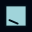
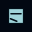

Each direction is rasterized at TRUE 16/32/48px with the repo's own dependency-free SDF pipeline, in the settled tokens (UIUX §2). All four are the B1 identity — a note-frame, a text bar, a completion stroke — drawn by different first principles, per the design law "identity from structure, not costume" (UIUX §1). The incumbent (the shipped 192 downscaled to 16px) is included for direct comparison.
B1's frame on water, text bars REMOVED. Tests whether the bars were the mud at 16px — the frame + completion stroke alone.

16 · 32 · 48The tile IS the note, edge to edge, one ink completion stroke. The app's own mark — minimal surface, maximal legibility.
Deep ground, a note chip with bar + stroke — the tab-favicon idiom: a small icon that floats on chrome-dark ground.

16 · 32 · 48B1's exact motif (frame + two bars + stroke) on the water fall — the shipped 512's own ground, for direct small-size comparison.
The incumbent: browsers take icon-192.png and squeeze it to 16px today. What a tab actually sees right now.